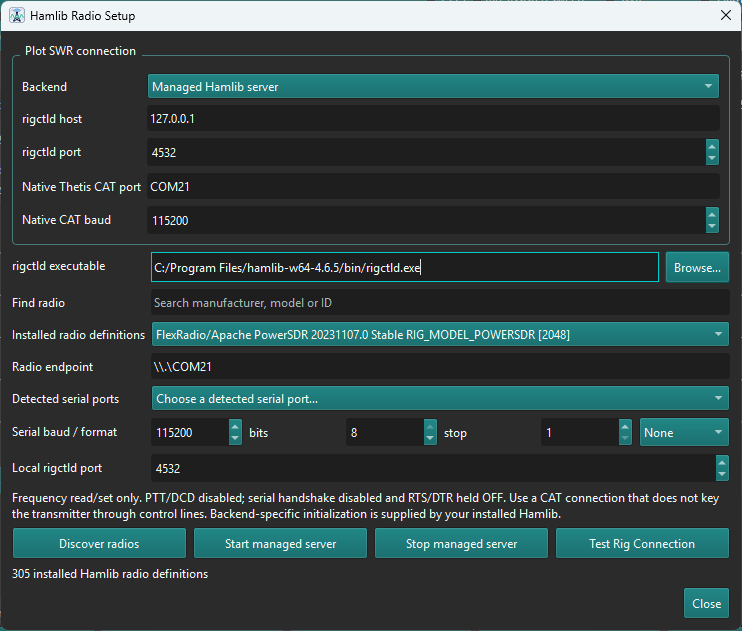
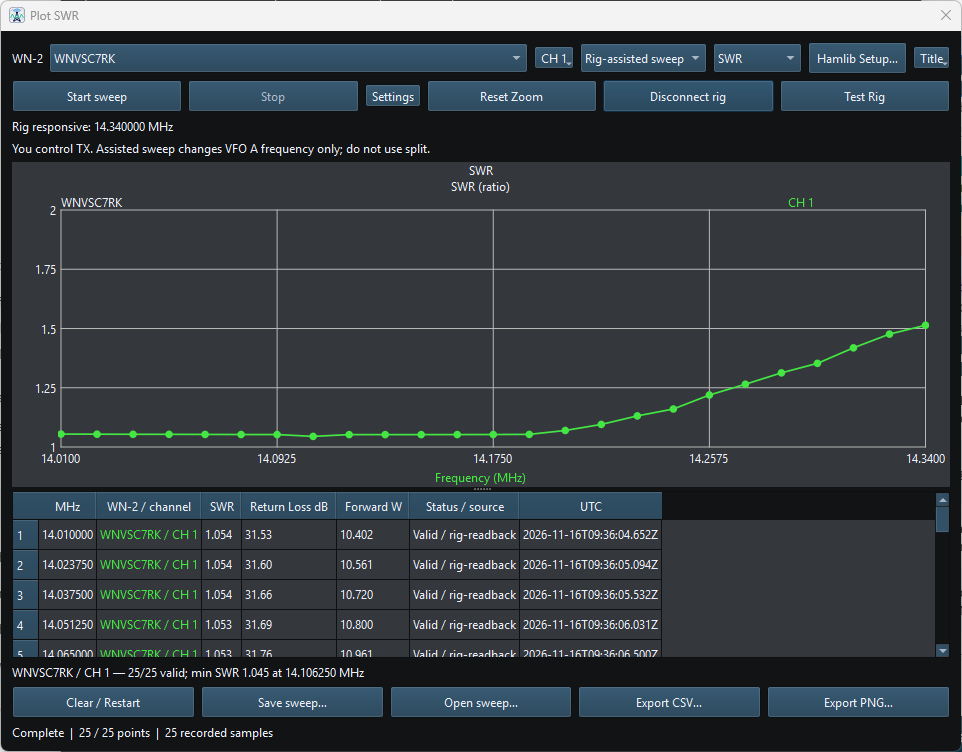

Rig-assisted sweeps and Hamlib setup
On this page
Choose rig-assisted operation
Open Tools → Plot SWR, choose Rig-assisted sweep, then open Hamlib Setup. Choose the connection appropriate to your radio: managed Hamlib, an existing rigctld connection, or native PowerSDR/Thetis CAT. Select the radio/model, connection and speed required by your station. Use Test Rig to check the frequency readback. An open connection alone does not prove the radio is responding. For a managed Hamlib setup, Connect rig starts the configured server when needed. You do not have to open Setup just to start it. The native Thetis choice uses its CAT connection directly.
Set up a managed Hamlib connection
- In Tools → Plot SWR, open Hamlib Setup and choose Managed Hamlib server as Backend.
- Beside rigctld executable, click Browse and select the installed Hamlib program. Its location can differ from the example below.
- Press Discover radios. Use Find radio to search, then select your radio in Installed radio definitions.
- Enter the Radio endpoint used by your radio's CAT connection, or choose it from Detected serial ports. Match Serial baud / format to your radio or CAT software.
- Keep the local server port consistent with the Plot SWR connection. The example uses host 127.0.0.1 (this computer) and port 4532.
- Use Start managed server, then Test Rig Connection to check the setup. Confirm that the displayed frequency agrees with your radio. This test is not a request to transmit.
- Close Setup and use Connect rig in Plot SWR. For later connections, Connect rig starts the configured managed server automatically when needed.

Example Hamlib setup for PowerSDR/Thetis, supplied and approved by the owner. Select the model, port and speed for your station; COM21 is this example's CAT port, not the WN-2 USB connection. Select image to enlarge.

Native PowerSDR/Thetis CAT is an alternative backend. For that choice, select the Native Thetis CAT port and baud; a managed Hamlib server is not used. An existing rigctld server instead uses its configured host and port. Do not copy a station-specific path or port without checking your own setup.
Plan and run
Select channels and start/end frequency, point count or step, and settling time. Choose how unavailable RF points should be handled. The operator controls transmission; the radio must allow frequency changes under the intended operating conditions. Start sweep reads the original frequency, tunes each point and checks the radio's reported frequency before recording. The app changes frequency only; it does not set PTT, TUNE, mode, power or antenna selection. Use a CAT connection that does not key the radio through serial control lines. Avoid split operation and another program retuning during the sweep.

Real rig-assisted SWR sweep of Ray's 20M Yagi stack antennas, measured with WN-2 WNVSC7RK / CH 1. All 25 points are valid across 14.010–14.340 MHz. Select image to enlarge.

The curve shows the measured antenna response during this sweep. The table retains each point's frequency, SWR, return loss, forward power and acquisition status. Your antenna and station readings will differ.
Stop and restoration
Stop prevents further points being scheduled. A command already sent cannot be recalled. If selected, restoration returns to the original frequency and checks readback. A lost connection can prevent restoration, so check the radio after a failure. Closing Plot SWR stops its own managed Hamlib process, not a separate server you started elsewhere. Use Manual sweep when assisted tuning is not appropriate for your station.
Help home · RF StateSide · RayWn2App operator guide